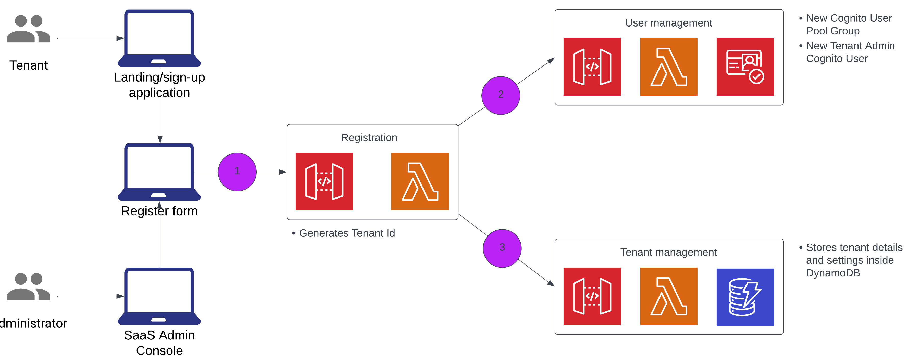

Trước khi có thể bắt đầu làm việc với các tenants, chúng ta cần giới thiệu các services cho phép chúng ta tích hợp, xác thực và quản lí environment. Các services, được gọi là shared services sẽ cung cấp chứng năng cốt lõi chung cho tất cả các tenants sẽ được quản lí và vận hành trong serverless SaaS solution của chúng ta. Đối với bước này, chúng ta ta sẽ xem xét các shared services và tìm hiểu code đằng sau các services này, điền vào những thiết xót của các chứng năng cần được triển khai. Sau đây là danh sách các tính năng sẽ được thêm vào trong bước này:
Mô hình kiến trúc bên dưới miêu ta tổng quát architecture mà chúng ta sẽ build và deploy. Thành phần được tô màu nổi bật với khung màu cam là khu vực mà chúng ta sẽ thêm vào ở bước này để đạt được mục tiêu của buổi workshop này.
Ứng dụng dành cho administration nhằm đại diện cho những hành động, những trải nghiệm trên ứng dụng sẽ được dùng bởi các SaaS provider. Ứng dụng này cung cấp những việc quản lí và vận hành cho environment của chúng ta và các tenants của nó.
Landing page là một signup page đơn giản, ẩn danh. Nó đại diện cho public-facing marketing page của chúng ta mà qua đó những tenants tiềm năng có thể đăng kí. Khi bạn click vào nút Sign up, bạn sẽ phải cung cấp dữ liệu về tenant mới của bạn và gửi thông tin đó đến dịch vụ đăng kí của hệ thống. Sau đó, service này sẽ tạo ra và cấu hình tất cả resource cần thiết dể đưa tenant mới vào hệ thống.
Các shared services đề cập đến bộ services chung, nó là cốt lõi của bất kì SaaS environment nào. Các services này cung cấp tất cả các cơ chế cần thiết để có cái nhìn toàn cảnh về cách tenants được onboarded, quản lí và vận hành trong SaaS environment.
Service Tenant Registration cho phép những tenants mới tự đăng kí và sử dụng ứng dụng SaaS của bạn. Nó chịu trách nhiệm sắp xếp các tương tác với quản lí người dùng và quản lí tenant, là một phần của ứng dụng chúng ta.
Service User Management cho phép chúng ta thêm vào, cập nhật, vô hiệu hóa, lấy thông tin của một user. Nó cũng cho phép lấy thông của tất cả users, vô hiệu hóa tất cả users và cũng có thể kích hoạt tất cả users cũng như tenant. Những users trong trường hợp này sẽ được lưu trữ trong Amazon Cognito.
Service Tenant Management cho phép chúng ta tập trung lại tất cả cấu hình và vận hành có thể được thực hiện bởi tenant. Nó bao gồm get, create, update, activate và disable chức năng của tenant. Thông tin chi tiết về tenant được lưu trữ trong table của Amazon DynamoDB.
Hình bên dưới mô tả quá trình onboarding của tenant và cách mà service Registration dùng các services khác để phân phối quy trình.

Quy trình đăng kí cho tenant là sự kết hợp của một vài bước. Tenant sử dụng ứng dụng sign-up để truy cập trang đăng kí, nơi họ cung cấp thông tin của mình để đăng kí. Thao tác này bắt đầu quá trình đăng kí bằng cách gọi registration endpoint bên trong API Gateway.
Bước tiếp theo là quy trình gọi đến service User Management để tạo new tenant admin user. Chúng ta đang sử dụng Amazon Cognito làm provider cho buổi workshop này. Service User Management sẽ tạo một Cognito User Group bên trong nhóm người dùng của tenant. Cuối cùng, tenant admin user được tạo ra và được thêm vào nhóm người dùng của tenant.
Là một phần của việc tạo ra tenant admin user, chúng ta cũng phải liên kết user này với các thuộc tính của tenant. Điều này đạt đượt thông qua các thuộc tính custom của Cognito. Các thuộc tính custom này lưu trữ một số thông tin cụ thể về tenant và user. Đối với solution này, chúng ta đã lưu trữ TenantId và User Role làm custom attributes.
Bước tiếp theo sẽ gọi service Tenant Management để lưu trữ thông tin chi tiết về tenant. Chúng ta cũng lưu trữ thông tin của nhóm người dùng cho tenant, dựa trên dữ liệu thu thập từ bước trước.
Một điều bạn có thể nhận thấy là service tenant registration không yêu cầu bất kì xác thực nào. Điều này là do thiết kế vì những tenants mới không thể được xác thực. Tuy nhiên, các endpoints được sử dụng để tạo ra tenant admin, tạo ra tenant và províion user đều được bảo vệ. Các endpoints này chỉ có thể được gọi từ service Tenant Registration.
Để giữ cho các endpoints nội bồ ở chế độ riêng tư và được bảo vệ, chúng ta đã sử dụng tính năng API Gateway Resource Policies. Các chính sách này đảm bảo rằng các entry points REST riêng tư của các services của chúng ta không thể truy cập public.